Walkie-Talkie with nRF24L01
Bu projede walkie-talkie yani bas-konuş özellikli telsiz yapımını, gerekli malzemeleri, kodları ve benim nasıl yaptığımı, yapamadığımı içerir.
Projenin videolu anlatımı ve testlerini aşağıdaki videodan izleyebilirsiniz.
❤️Arduino ile Walkie-Talkie(Telsiz) Yapımı ve Testleri (Video Henüz Yayınlanmadı)

🛠️Kullanılan Malzemeler #
-
2 adet Arduino Nano
- Boyutundan ötürü
Nanotercih ettim. Uno, Mega veya Nano kullanmak size kalmış. - Mega kullanıcaksanız bağlantılarda birkaç değişiklik oluyor unutmayın! (Anlatımda bundan bahsedicem)
- Boyutundan ötürü
-
2 adet nRF24L01 PA LNA 2.4GHz Alıcı - Verici Modül
- Antenli versiyonunu kullandım.
- İki versiyonun da bağlantıları aynı.
- Antensiz versiyonu açık alanda ort. 100m, kapalı alanda ise ort. 10-20m mesafede çalışıyormuş(Söylenene göre…)
- Antenli versiyonu ise ort. 10 kat arttırıyor. (Mesafe testinin videosu 🙏Yardım Aldığım Kaynaklar‘da mevcut)
- VCC yi 3.3V’a bağlayın yoksa bozuluyor veya adaptör ile 5V da kullanın. Ben adaptörle 5V da kullandım.
- Adaptörsüz kullanıcaksanız modüle kondansatör lehimlemeniz gerekiyor. İnternette hangi pinlere bağlandığıyla ilgili videolar var.
-
2 adet nRF24L01 Wireless Modül Adaptörü
- Bu adaptör 5V ile çalışmayı sağlıyor.
- Antenli yada antensiz olsun ikisinde de kullanmanızı öneririm.
- Paraziti de azaltıyormuş(!)
-
2 adet MAX4466 Elektret Mikrofon
- 5V veya 3.3V’da kullanabilirsiniz ama 3.3V’da daha temiz ses elde ettim.
-
2 adet 8R 0.5W 83DB 36x5mm Hoparlör
- Ses seviyesi olarak yeterliydi.
- Arduino’nun besleyebileceği boyutta her hoparlörün de çalışacağını düşünüyorum.
-
2 adet Buton
- Benim kullandığım butonun tuş kısmı biraz uzun ve çapı küçük.
- Daha geniş boyutlarda buton daha rahat kullanımı olabilir.
- 2 bacaklı herhangi buton da çalışacakdır.
-
2 adet 10K Direnç (Kahve-Siyah-Turuncu-Altın)
-
Jumper Kablo (Dişi-Erkek, Erkek-Erkek)
-
2 adet Breadboard
- Devreyi kurup test etmek için kullandım.
- Çeşit olsun diye farklı boyutlarda aldım. Orta boy, devre için yeterli alanı sağlıyor.
- Büyük Boy Breadboard
- Orta Boy Breadboard
-
- Breadboard üzerindeki testlerden sonra devreyi lehim ile sabit halde kullanmak için aldım.
- Jumper kablolar ortada cirit atmamış oluyor.
- İlk pertinaks alma ve kullanma deneyimim olacağından dolayı riske atmayıp 2 adet almıştım ama 1 tanesi(12x18cm) yetti.
-
- Eğer pertinaks üzerine sabitlemeyecekseniz sadece hoparlör kablolarını lehimlemek için kullandım.
- Daha ince havya ucu ile lehim daha kolay yapılabilirdi.
-
- 1.2mm kalınlığında tel kullandım ama daha ince (0.75mm vb.) tel ile lehim işlemi daha kolay olabilir.
- Yakın pinleri lehimlerken bir yandan lehim teli bir yandan kablo bir yandan havya ucu biraz zorladı.
-
Silikon Tabancası
- Devrede hareketli parçaları sabitlemek ve devrelere teması engellemek için dışını balonlu naylonla(patlatılan poşetler) kaplamak için kullandım.
- Hoparlör sarkık durmaması için de kullandım.
-
Kablo Soymak için Aletler
- Kablo soyma pensesi yerine yan keski ve pense kullandım ama soyma pensesi olsa çok daha kolay olurdu.
📥Kütüphanelerin ve Kodların İndirilmesi #
RF24, RF24Audio kütüphanelerini ve telsiz için gereken kodları aşağıdaki bağlantılardan indirin.
RF24: github.com/nRF24/RF24
RF24Audio: github.com/nRF24/RF24Audio
Gerekli Kodlar: github.com/ZekeriyaAY/Arduino-Walkie-Talkie
📤Kütüphanelerin IDE’ye Eklenmesi #
İndirilen .zip dosyalarını aşağıdaki yol ile ekleyin.
⚠️ Sadece RF24 ve RF24Audio dosyaları kütüphane dosyalarıdır.
Arduino IDE > Taslak > library ekle > .ZIP Kitaplığı Ekle...
📤Kodların Arduino’ya Yüklenmesi #
Bu aşamaya şuan ihtiyaç yok ancak devre bağlantılarını yaptıktan sonra kodları burada anlatıldığı gibi yüklemeniz için eklendi.
- İndirilen
Arduino-Walkie-Talkie-main.zipdosyasının içindeki yüklemek istediğiniz.inouzantılı Arduino kodunu IDE ile açın. - Arduino’yu bilgisayara takın.
Araçlar > Kart //Kullandığınız Arduino türünü seçin
Araçlar > Port //Kartın takılı olduğu portu seçin
Portlarda kartınız gözükmüyorsa -> CH340 çipli klon arduino sürücüleri nasıl yüklenir?
Doğru kartı ve portu seçtiğinizden eminseniz iki Arduino’ya da kodları yükleyebilirsiniz.
Yükleme sırasında sorun çıktı ise;
Araçlar > Islemci //Diğer seçeneklere bi' bak ATmega328P(Old Bootloader) seçtiğimde sorun geçmişti.
🗺️Devre Kurulumu ve Test Edilmesi #
Sıra aldığımız malzemeleri birleştirip test etmeye geldi.
📡nRF24L01 Bağlantısı ve Testi #
nRF24L01 modülü ve kullanacağımız adaptörün pin dizilimini aşağıdaki resimlerden ulaşabilirsiniz. 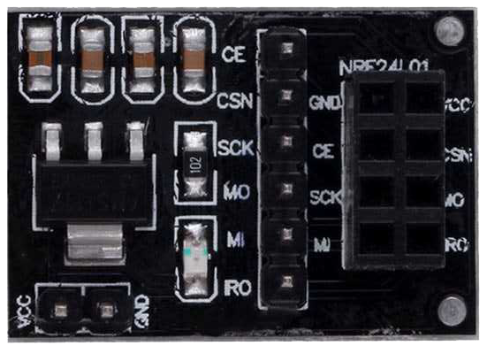 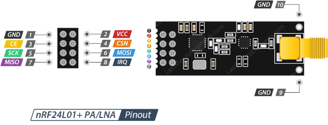
Adaptör kullanmadan yapılan bağlantı aşağıda gösteriliyor. Adaptör kullanarak yapılan bağlantıda tek değişiklik VCC‘yi 3.3V yerine 5V‘a bağlamanız.
- Boş olan pin, kullanılmayan
IRQpini.
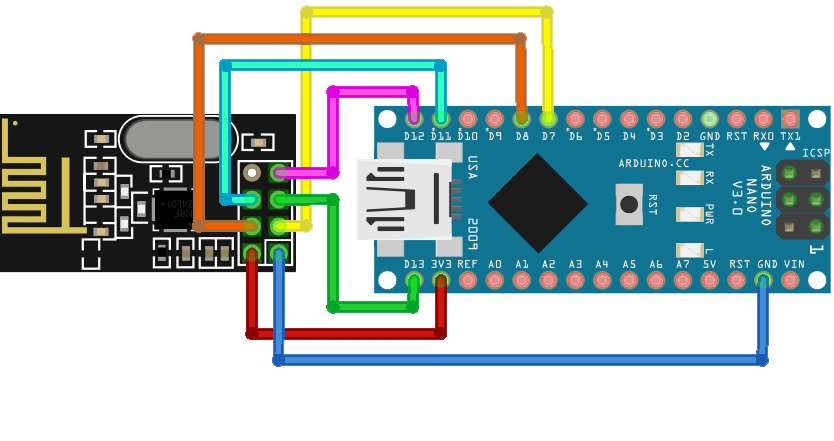
Aşağıdaki pin dizilimleri Nano/Uno içindir. Mega için farklı pinler kullanılıyor. 🙏Yardım Aldığım Kaynaklar‘da o bağlantıları bulabilirsiniz.
| nRF24L01 | Arduino |
|---|---|
| GND | GND |
| VCC | 3.3 / 5V |
| CE | D7 |
| CSN | D8 |
| SCK | D13 |
| MOSI | D11 |
| MISO | D12 |
Arduino-Walkie-Talkie-main.zipdosyasındakireceiver.inokodunu bir Arduino’ya,transmitter.inokodunu diğer Arduino’ya yükleyin.
İki kodu da farklı Arduinolara yükledikten sonra alıcı kodunu yüklediğiniz Arduino’nun “Seri Port Ekranı” nda “Hello Ardu” yazısını görüyorsanız bağlantılar doğrudur demektir.
🔊Hoparlör Bağlantısı ve Testi #
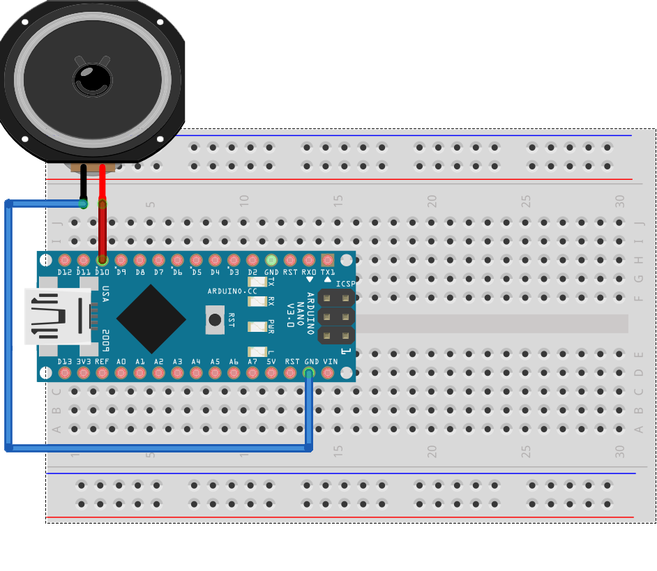
Hoparlör üzerinde kırmızı kablo(+) D10 pinine, siyah kablo(-) GND pinine bağladım.
Arduino-Walkie-Talkie-main.zip dosyasındaki speaker.ino kodunu Arduino’ya yükleyip hoparlör bağlantılarını melodi sesleriyle test edebilirsiniz.
🔘Buton Bağlantısı ve Testi #
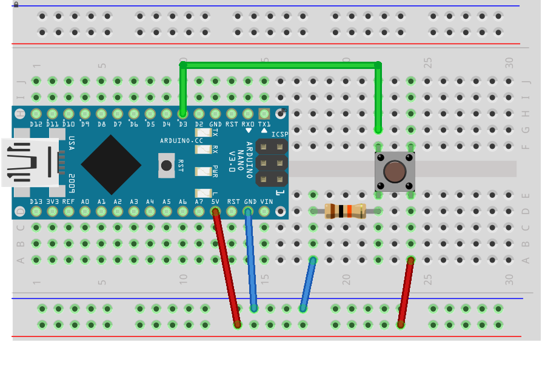
Arduino-Walkie-Talkie-main.zip dosyasındaki button.ino kodunu Arduino’ya yükleyin.
Kodu yükledikten sonra “Seri Port Ekranı” nda butona bastığınızda sayaç sayıları artıyorsa sıradaki ve son bağlantıya geçebilirsiniz.
🎤Mikrofon Bağlantısı ve Testi #
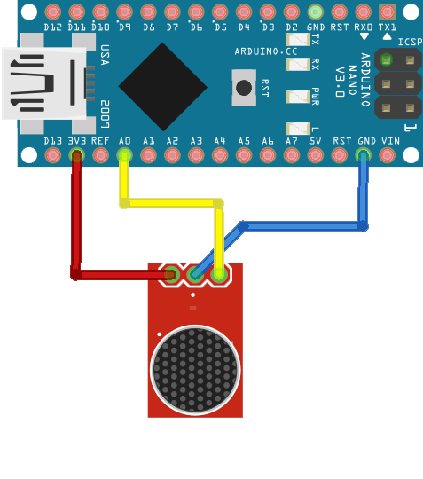
5V’a da bağlayabilirsiniz. Ancak 3.3V da daha temiz ses elde ettiğim için 3.3V kullandım.
Arduino-Walkie-Talkie-main.zip dosyasındaki microphone.ino kodunu Arduino’ya yükleyin.
Kodu çalıştırdıktan sonra “Seri Port Ekranı” nda mikrofona konuştuğunuz zaman Volt değerlerinin değiştiğini göreceksiniz. Eğer değişim olmuyorsa bağlantıları kontrol edin.
🗺️Tüm Bağlantı Şeması #
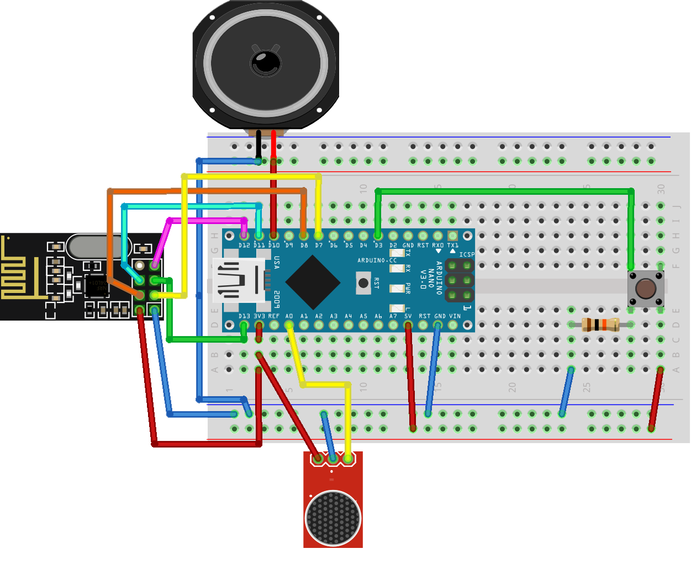
Resim 7’de devrenin son hali var. Şemaları çizdiğimiz programda nRF24L01 antenli versiyonu veya adaptörü olmadığı için şemada antensiz ve adaptörsüz halini görüyorsunuz. Bağlantılarda herhangi bir farklılık yok.
Eğer adaptör kullanıcaksanız adaptörün
VCC‘yi3.3Vyerine5V‘a bağlayın.
📤Ana Kodun Arduino’ya Yüklenmesi #
İndirilen Arduino-Walkie-Talkie-main.zip dosyasının içindeki main.ino kodu iki Arduino’ya 📤Kodların Arduino’ya Yüklenmesinde anlatıldığı gibi yükleyin.
Sorunsuz yüklendiyse butona basıp konuşmaya başlayabilirsiniz.
📦Lehim ile Sabit Devre Kurulumu #
Devremizi breadboard üzerine kurduk, kodları yükleyip çalıştırdık. Sırada lehim ile pertinaks üzerine sabit devreyi kurma aşamasına geldik.
Bu aşama zorunlu değildir. İsterseniz breadboard üzerinde kullanabilirsiniz ancak pertinaks üzerinde kablo karmaşası olmadan daha kullanışlı olduğu için bu aşamayı yaptım. Ayrıca pertinaks üzerinde sabit devrede mikrofonda gürültü daha da azaldı. Sanırım jumper kablolar daha az, daha kısa olduğu için parazit azaldı.
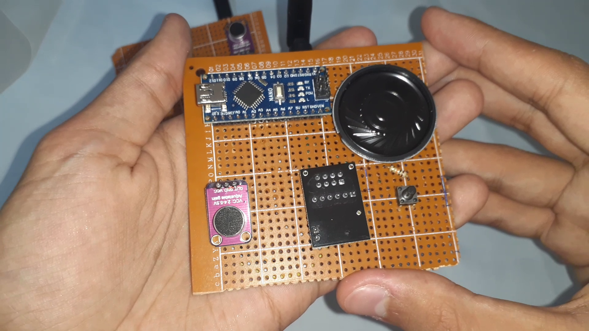 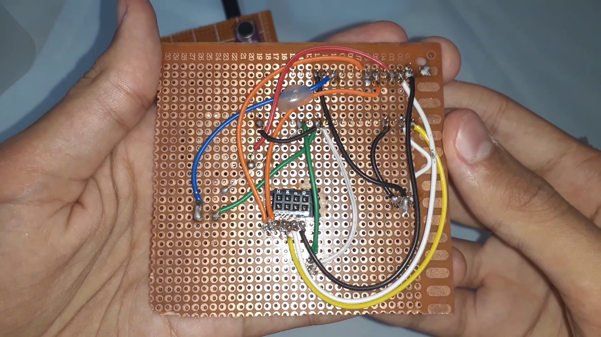 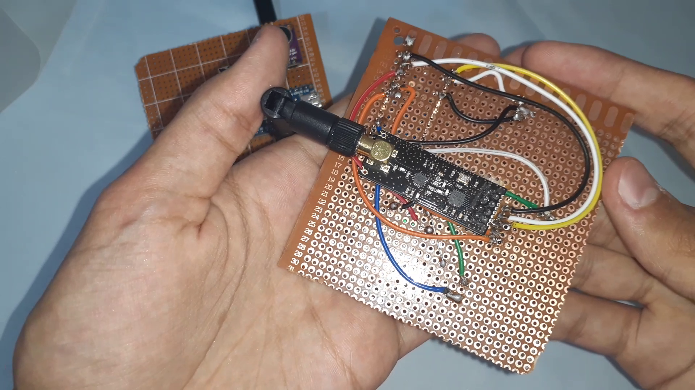
Alıcı-verici modülü sabitlemek için altına sıcak silikon sıktım. Yoksa hareket ettiğinde pinlerde temassızlık oluyor ve telsiz bağlantıları kesiliyordu.
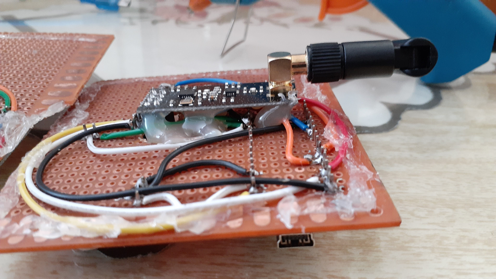
Devrenin arkasındaki pinlere dokununca devre bozulabiliyor. Bu yüzden arkasına ve önüne patlatılan poşetlerden kesip sıcak silikonla yapıştırdım. Böylece devrelere temas etmemiş oluyoruz.
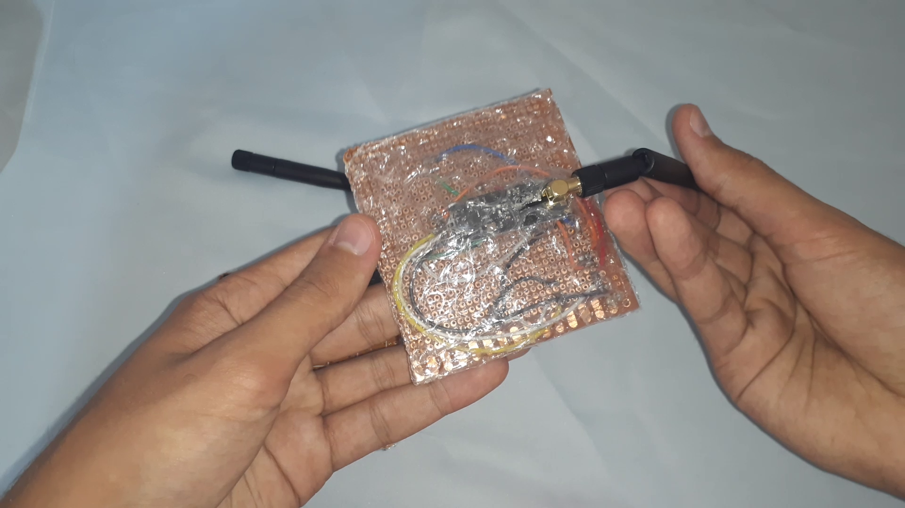 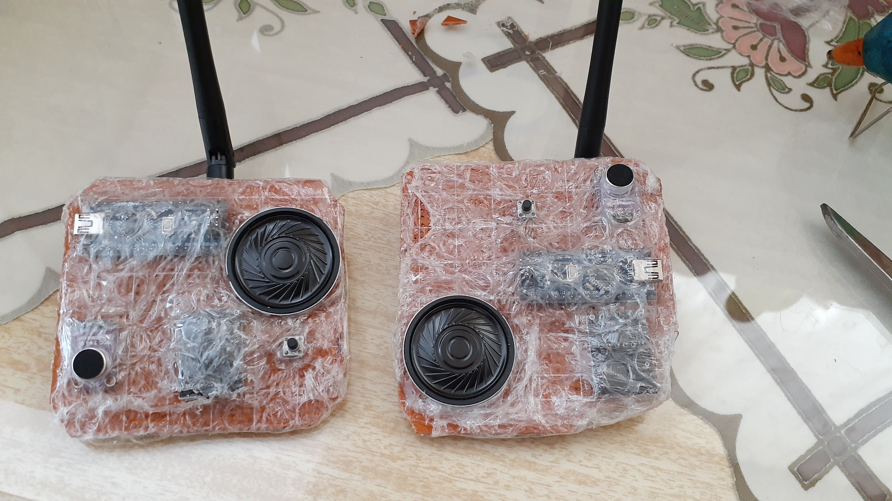 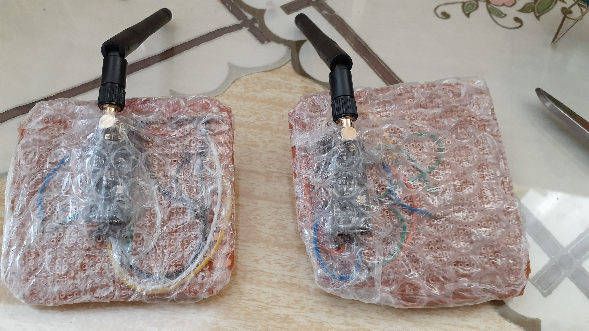
🙏Yardım Aldığım Kaynaklar #
- nRF24L01 modülü ile ilgili
- Arduino Mega kullanıcaklar için bağlantılar bu linklerde bulunuyor.
- hayaletveyap.com/arduino-ile-nrf24l01-kablosuz-rf-modul-kullanimi
- lastminuteengineers.com/nrf24l01-arduino-wireless-communication
- nRF24L01 Antenli ve Antensiz Menzil Testi Videosu
- Walkie-Talkie yapan en detaylı kaynak olabilir ama eksikleri var(İngilizce)
- Walkie-Talkie yapan Türkçe kaynak
🖋️Sonuç Nasıl Oldu? #
Sonuçtan büyük ölçekte memnunum. Birkaç tecrübe edindim.
- Pertinaks üzerine lehimlerken Arduino’yu direk lehimledim. Bunu yapmak yerine dişi-erkek pin header lehimleyip Arduino’yu bu headerlara takmak daha iyi olur. Böylece gerektiğinde Arduino’yu kolayca çıkartılıp yenisi takılabilir veya başka şeylerde kullanılabilir.
- İlk uzun lehim deneyimim olduğundan dolayımı bilmiyorum ama daha ince lehim teli, daha ince havya ucu ve lehim pastası kullansam lehim işlemleri daha kolay olabilirdi.
- Kabloları soymak için kablo soyma pensesi kullanmak daha kısa sürmesine ve daha düzenli olmasını sağlar. Pense ve yan keski kullanarak biraz zor oldu.
- Telsiz çalışırken iki taraf da butona basılı tutup konuşmaya çalışınca iki taraf da duymadığı gibi bug’a girmesine neden oluyor. Böyle durumlarda Arduino üzerindeki reset butona basıp kodların tekrar çalıştırılmasını sağlayarak bug sorunu o anlık çözebiliyoruz. Bir taraf konuşurken diğer taraf da dinlemesini bilmeli yani 🙃
Bu Repoya ⭐Yıldız, Youtube Videoma 💬Yorumunu Bırakıp, Eksiklerimi Söyleyerek Bana Destek Olabilirsin #
Telsizin testlerini ve yapım aşamasını aşağıdaki videodan izleyebilirsiniz.
❤️Arduino ile Walkie-Talkie(Telsiz) Yapımı ve Testleri (Video Henüz Yayınlanmadı)
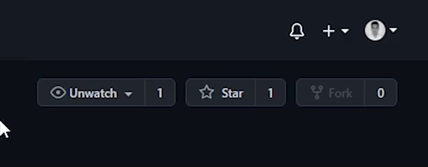